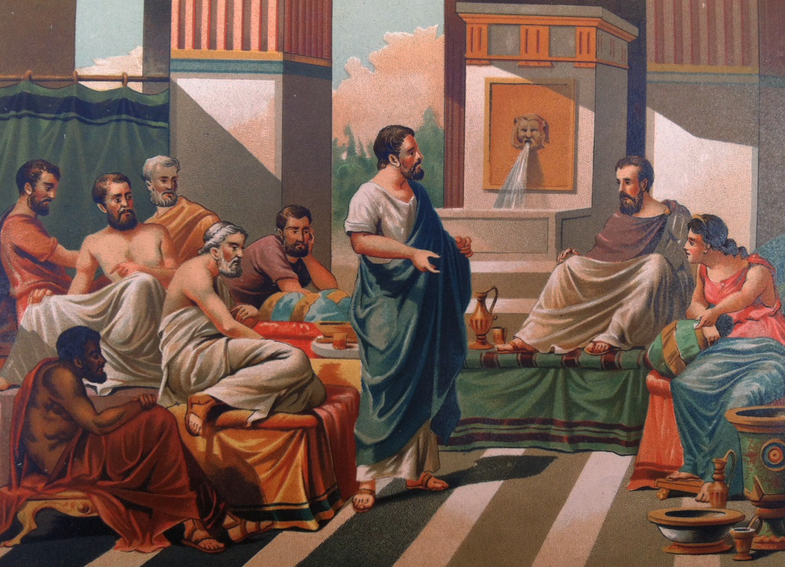

Tales de Mileto

Referência:letraefilosofia.com.br Acesso-30/09/20
Obras/Teorias
FATOS GEOMÉTRICOS:
- A demonstração de que os ângulos da base de dois triângulos isósceles são iguais.
- A demonstração do seguinte teorema (TEOREMA DE TALES): se dois triângulos têm dois ângulos e um lado respectivamente iguais, então são iguais.
- Todo diâmetro divide um círculo em duas partes iguais. A demonstração de que ao unir-se qualquer ponto de uma circunferência aos extremos de um diâmetro AB obtém-se um triângulo retângulo em C.
FATOS ASTRONÔMICOS:
- Previu com antecedência o eclipse do Sol observada em 28 de maio de 585 a.C.
- Verificou não ser uniforme o círculo da Terra entre os solstícios.
- Dividiu o ano em 365 dias.
- Estabeleceu o diâmetro do Sol.
- Realizou o cálculo da altura das pirâmides.
- Foi o primeiro a explicar o eclipse solar, ao verificar que a Lua é iluminada por esse astro.
- Além disso, "Para o filósofo jônico o princípio de todas as coisas é a água, sendo talvez levado a formar essa opinião, por ter observado que o alimento de todas as coisas é úmido e que o próprio calor é gerado e alimentado pela umidade. Ora, aquilo de que se originam todas as coisas é o princípio delas.”